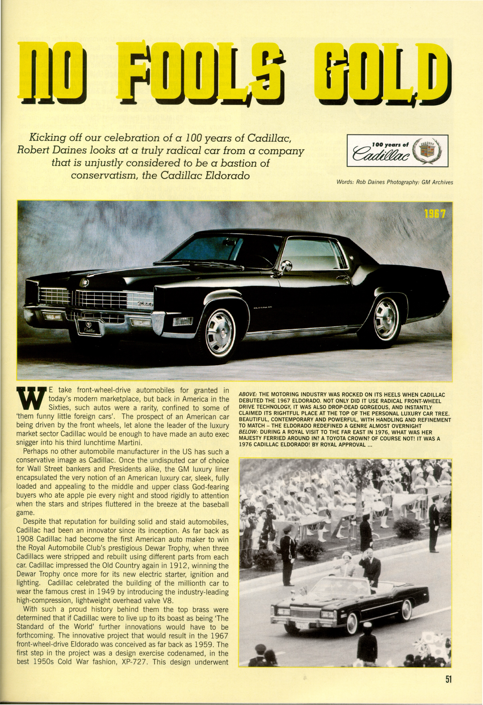
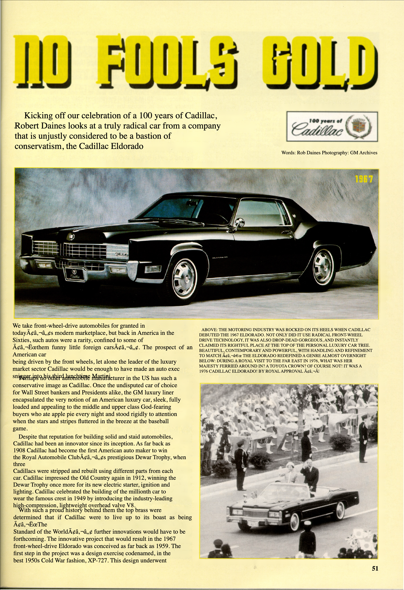
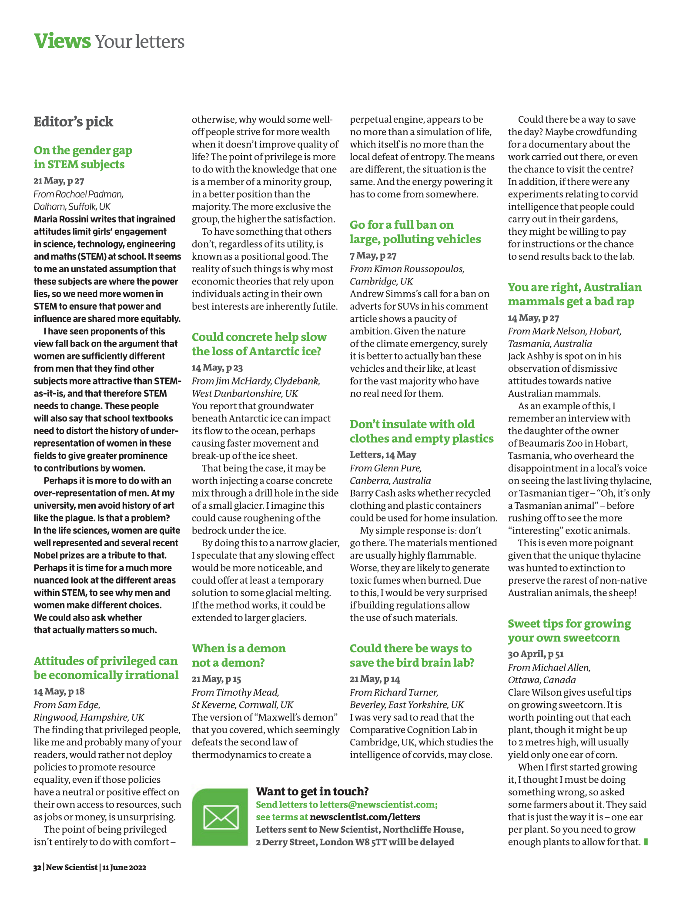
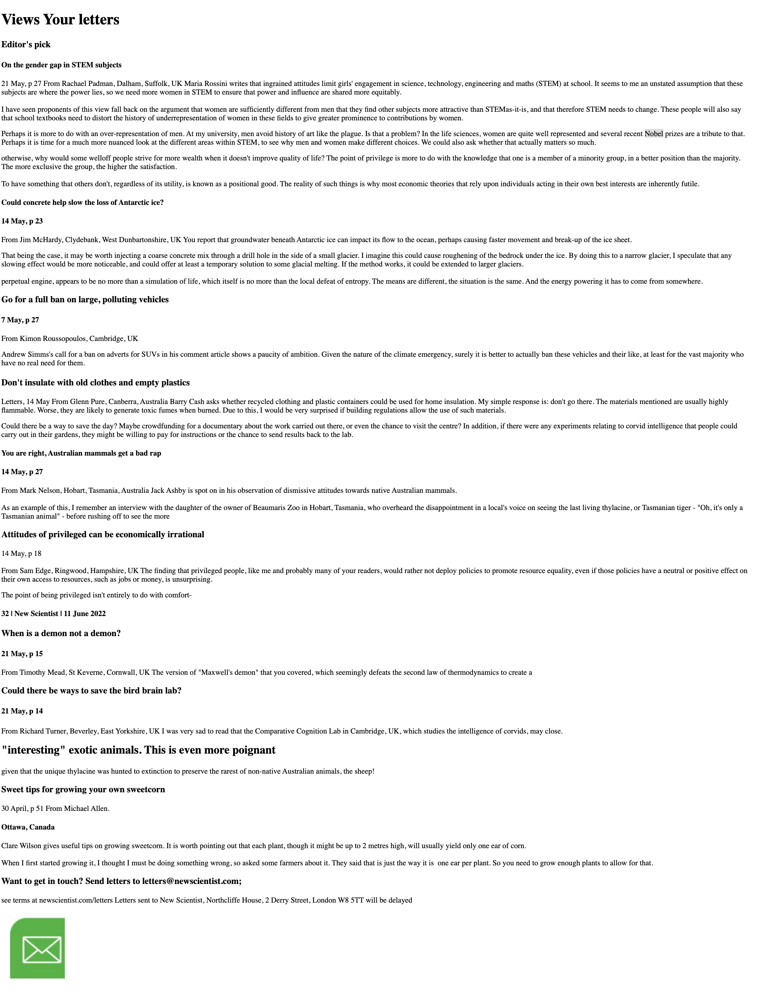
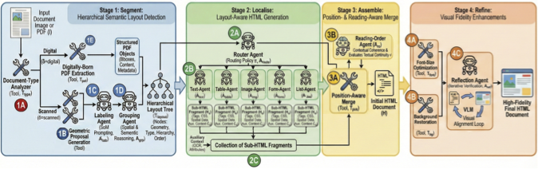
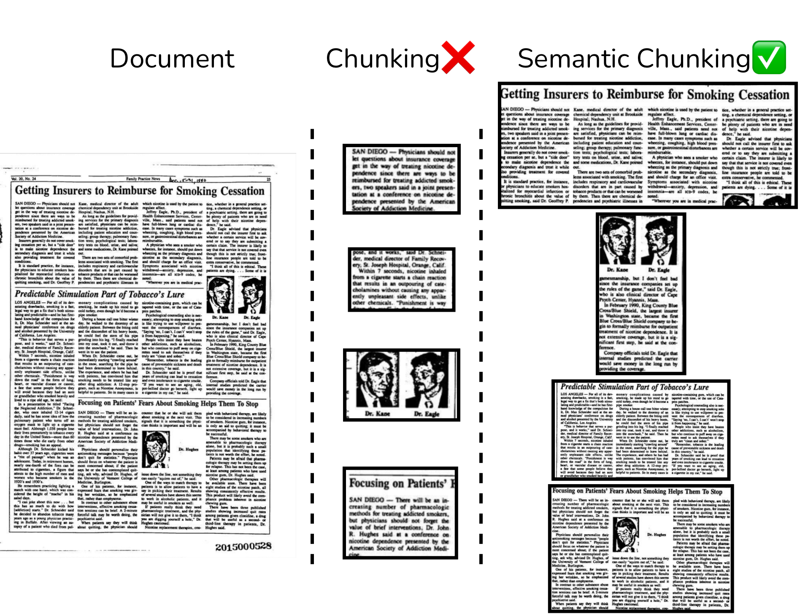
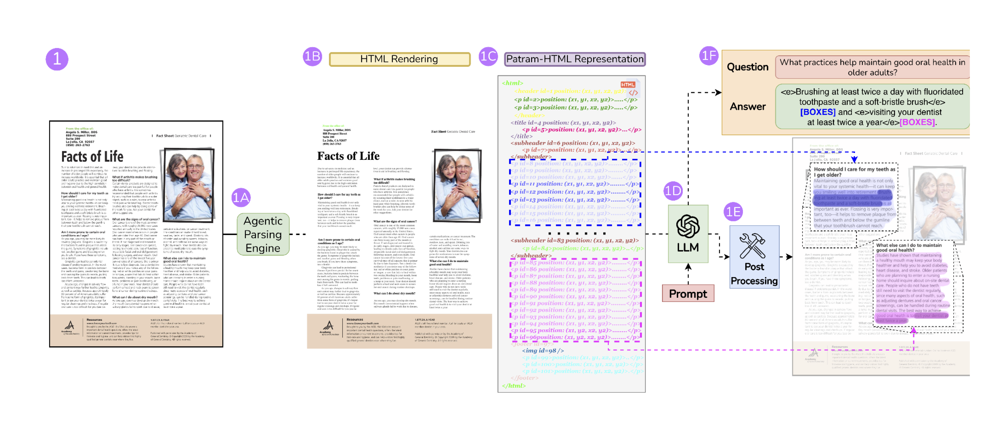

REPLICA: An Agentic Framework for Visually Faithful Document Reconstruction
Reimagining OCR beyond text extraction. Rebuild any page as HTML that still looks like the page.
1 BharatGen · 2 IIIT Hyderabad · * Equal contribution

replica-agents.github.io


0.93
VFS — visual fidelity,
VLM-as-a-judge
0.86
OS_all — overall,
against 0.58 for GPT-5
0.86
GPS — global position,
LPS 0.73 local
+39pts
Qwen3-VL-8B + REPLICA: 0.86
vs direct Qwen3-VL-30B: 0.47
WHY FID-HTML?
A usable page, not a transcript. Content, hierarchy, layout, and styling remain available in the DOM.
What gets lost
Existing converters keep the words and drop the page.


Fid-HTML
Four axes of reconstruction
Content + reading order
Tags, tables + nesting
Global + local geometry
Type, colour + styling
| Format | TE | LS | PS | VF | |||
|---|---|---|---|---|---|---|---|
| Content | R.O. | Tables | Figures | Hier. | BBoxes | Styling | |
| Markdown | ✓ | P | × | P | P | × | × |
| LaTeX | ✓ | P | ✓ | ✓ | ✓ | P | ✓ |
| Qwen-HTML | ✓ | P | ✓ | P | P | × | ✓ |
| Fid-HTML | ✓ | ✓ | ✓ | ✓ | ✓ | ✓ | ✓ |

How we measure
5,000
documents
15+
languages
20+
document categories
100%
expert human-annotated
- TE
- Text extraction — CRR, WRR
- LS
- Logical structure — NTED, TEDS, CDM
- PS
- Physical structure — GPS global + LPS local, IoU-matched, area-normalised F1
- VF
- Visual fidelity — VFS, VLM-as-a-judge vs human ground truth
Overall = (TE + LS + PS + VF) / 4
Pearson r > 0.8 vs seven expert annotators, 100 documents.
Results
| Method | TE | LS | PS | VF | Overall |
|---|---|---|---|---|---|
| Marker | 0.68 / 0.82 | 0.61 | 0.19 / 0.34 | 0.74 | 0.53 |
| Docling | 0.40 / 0.49 | 0.62 | 0.17 / 0.26 | 0.55 | 0.38 |
| Qwen3-VL | 0.66 / 0.79 | 0.59 | 0.22 / 0.30 | 0.43 | 0.47 |
| Gemini-2.5-Pro | 0.67 / 0.42 | 0.56 | 0.14 / 0.31 | 0.82 | 0.47 |
| GPT-5 | 0.65 / 0.79 | 0.49 | 0.21 / 0.43 | 0.86 | 0.58 |
| REPLICA (Ours) | 0.88 / 0.93 | 0.20 | 0.73 / 0.86 | 0.93 | 0.86 |
TE = WRR / CRR · PS = LPS / GPS · NTED lower is better
ABLATION — WHERE THE 0.93 COMES FROM
What it unlocks


Limitations